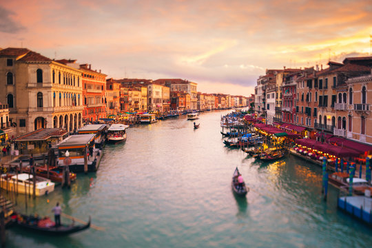
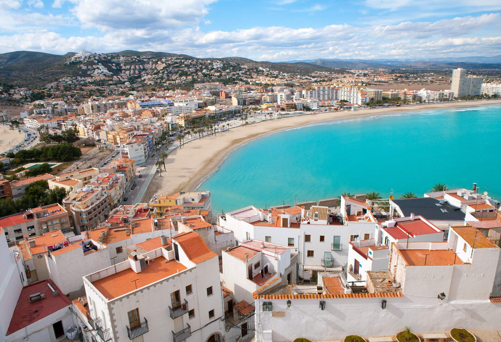

My Trips

Italy is known for its rich history, stunning architecture, and delicious cuisine. I visited Rome, Florence, and Venice.

Germany offers a blend of modern and medieval attractions. Highlights include Berlin, Munich, and the Black Forest.

Greece's ancient ruins and beautiful islands like Santorini and Mykonos were unforgettable experiences.

Spain's vibrant culture and landmarks such as Barcelona's Sagrada Familia and Madrid's Royal Palace were amazing.

Hungary, especially Budapest, is famous for its beautiful architecture, thermal baths, and rich history.

France, with its romantic cities like Paris and scenic regions like Provence, offered a diverse travel experience.